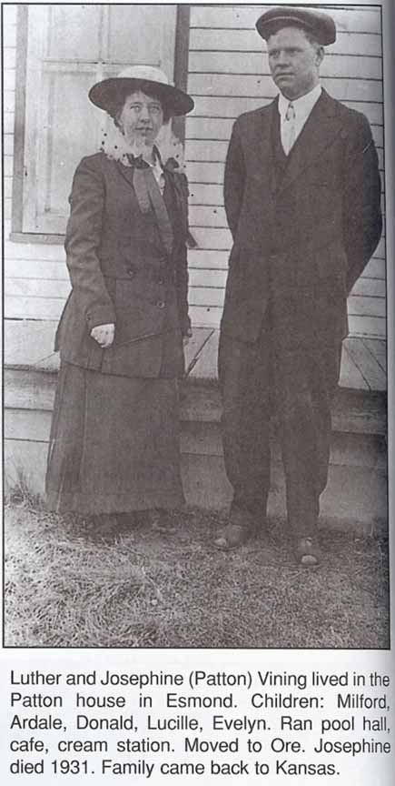

Family Data
Luther Vining and Josephine (Patton) Vining:
Census Data
| 1920 | 1930 | 1930 | |
| Luther Vining | 30 | ? | ? |
| Josephine (Patton) Vining | 32 | ? | ? |
| Ardale Vining | 1 year, [2?] months | ? | ? |
| Donald Vining | ? | ? | |
| Evelyn Vining | ? | ? | |
| Milford Claire Vining | ? | ? | |
| Lucille Vining | ? | ? |